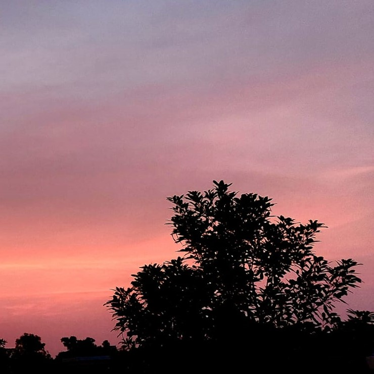

After a series of online classes for over 3 months,the most awaited news of offline classes had finally arrived on the 4th of April. With hearts full of hope and young souls looking forward towards the start of a new life, we arrived at the doorstep of our hostel.
Everyday in the hostel feels like an oppurtunity to explore and do something new. The 1 AM Maggi parties, the unhinged dance moves and the chaotic gossips - all contributed together in making a beautiful collection of memories. To be honest, the memories made in here would not be possible elsewhere. After all, what matters in the end is we've become a familly- we've found a home away from home.